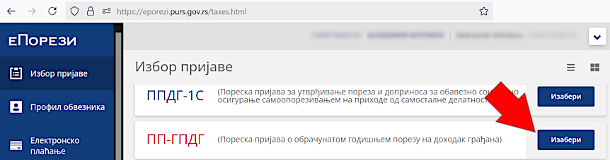
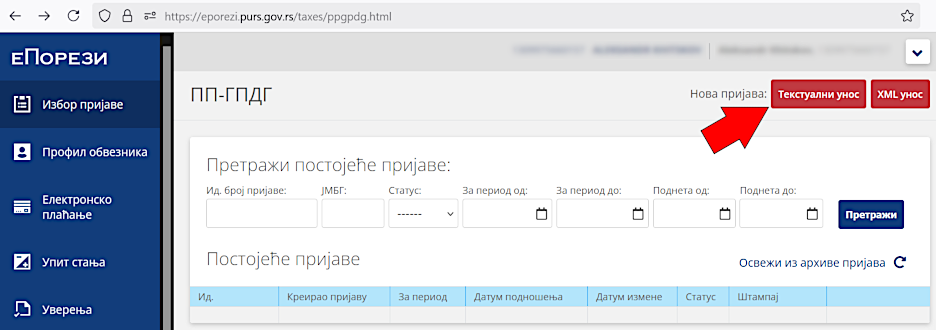
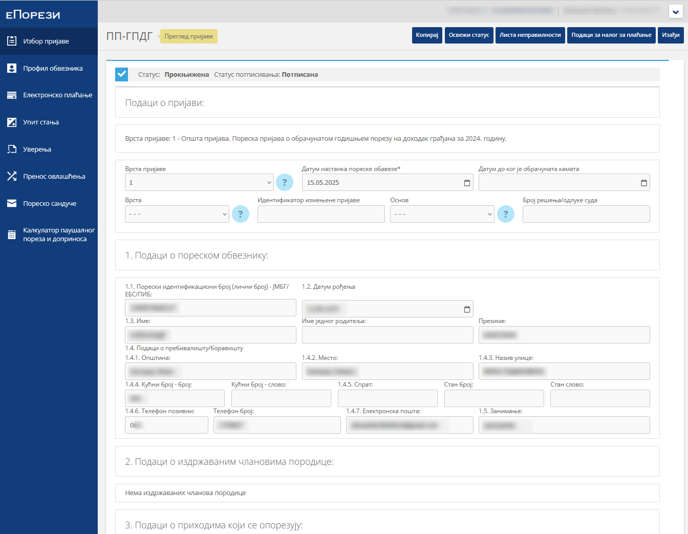
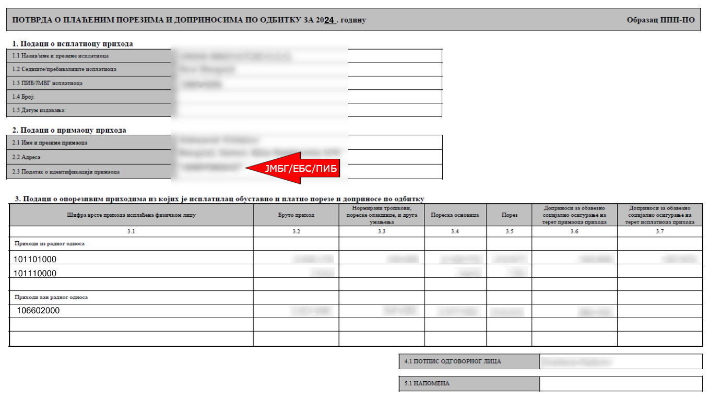
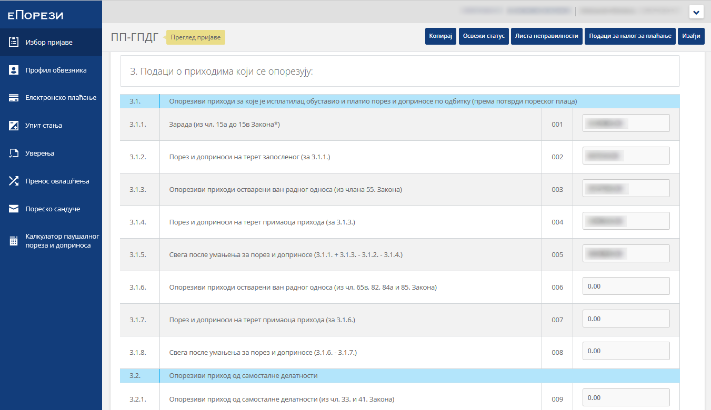
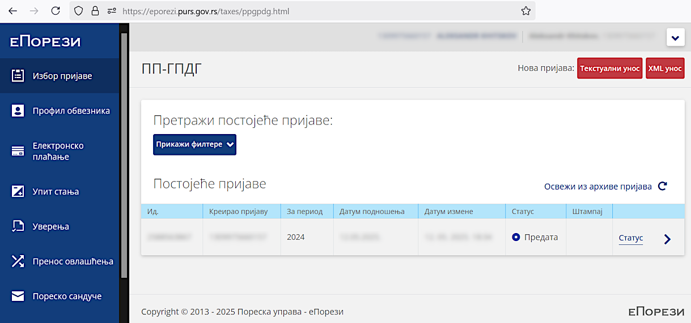
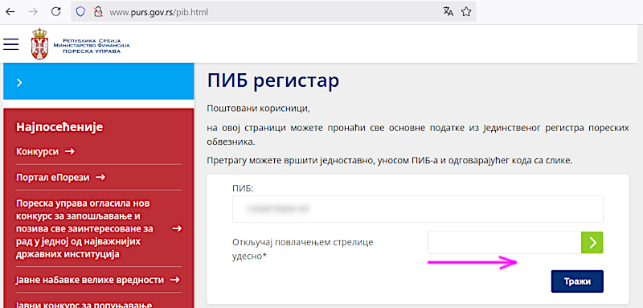
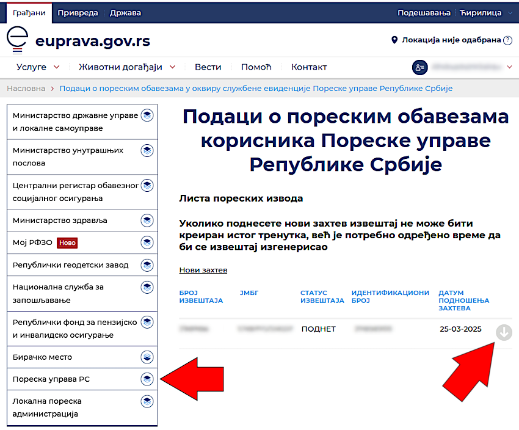
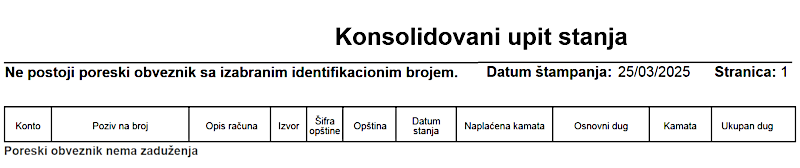

HomeIndex
HomeIndex </>
</>
Taxes
Place for monitoring and managing taxation state, like additional taxes calculation and payment.
ConsentID is required to access this resource. "Mobile application" logging in option (see here) may be used. Login with password doesn't work.
The tax payer list may be empty initially (i.e. only the blue table header is shown). See here for troubleshooting.
Правилник о пореском идентификационом броју (Rulebook on tax identification number):
ПИБ се одређује и додељује у Централи Пореске управе за све пореске обвезнике у Републици.
ПИБ се јединствено означава у нумеричком облику.
ПИБ за резидентна физичка лица која нису предузетници и за обвезнике пореза и доприноса на приходе од пољопривреде и шумарства, састоји се од 13 цифара и представља јединствени матични број грађана (у даљем тексту: ЈМБГ) додељен од стране Министарства унутрашњих послова, у складу са законом.
The PIB is determined and assigned at the Tax Administration Headquarters for all taxpayers in the Republic.
The PIB is uniquely designated in numerical form.
The PIB for resident natural persons who are not entrepreneurs and for taxpayers of taxes and contributions on income from agriculture and forestry consists of 13 digits and represents a unique citizen identification number (hereinafter: JMBG) assigned by the Ministry of Internal Affairs, in accordance with the law.
Also see JMBG.
On the еПорези main page click the "Изабери" button and select the "ПП-ГПДГ" item:

Declaration may be already automatically filled for the required year in the "Постојеће пријаве" section. To add it manually click the "Текстуални унос" button:

Enter personal data:

Open the "ППП-ПО" form (provided by the employer):

And fill the "3. Подаци о приходима који се опорезују" section:

The following material may be used: Уплата налогов в Сербии:
The following calculations were done (not surely 100% correct but looks like it was accepted):
| From "ППП-ПО" | To "ПП ГПДГ" |
|---|---|
| Sum of column 3.4 (first 2 values) | Line 3.1.1 |
| Sum of columns 3.5 and 3.6 (first 3 values) | Line 3.1.2 |
| Column 3.4 (the 3rd value, "ван радног односа") | Line 3.1.3 |
| Sum of columns 3.5 and 3.6 (2 values, "ван радног односа") | Line 3.1.4 |
The value in line 3.1.5 ("ПП ГПДГ") must be calculated automatically.
Fulfill the following actions:
The declaration status must be "Предата":

On the next day it changed to "Прокњижена".
http://www.purs.gov.rs/pib.html

Enter the PIB and move the red arrow to the right so that it becomes green and the "Тражи" button is activated. If the account exists its main data will be shown.
At the еУправа portal main page, click on the "Моји подаци" tile, choose the "Пореска управа РС" section and click on the "Нови захтев" button:

A new request record will appear and its state changes from "ПОДНЕТ" to "УСПЕШНО ЗАВРШЕН" clicking the gray circle with down arrow will open a PDF report like this:

Упутства и обрасци http://www.purs.gov.rs/e-porezi/Uputstva.html:
Materials:
50. Како да активирам налог на порталу еПорези у циљу подношења ПП ГПДГ пријаве? (50. How do I activate an account on the ePorezi portal in order to submit a PP GPDG return?):
Физичка лица за које Пореска управа поднесе унапред попуњену пореску пријаву ПП ГПДГ, аутоматски имају активиран налог на порталу Пореске управе еПорези.
Лица којима није активиран налог на порталу Пореске управе еПорези, а остварила су доходак за опорезивање годишњим порезом на доходак грађана, који умањен за плаћене порезе и доприносе прелази износ од 4.874.508 динара, у обавези су да сами попуне и поднесу пореску пријаву за годишњи порез на доходак грађана за 2024. годину у електронском облику најкасније до 15. маја 2025. године. Да би исти могли поднети пореску пријаву ПП ГПДГ претходно је потребно да се региструју као порески обвезници.
Први корак у поступку регистрације је попуњавање основних података о пореском обвезнику преко форме за регистрацију на порталу еПорези (део – Регистрација физичког лица као пореског обвезника) којем се приступа помоћу квалификованог електронског сертификата. Након 24 сата од извршене регистрације, од стране Пореске управе, овим обвезницима биће омогућено да у делу „Избор пријаве“ одаберу пореску пријаву ПП ГПДГ, и попуне избором опције „Текстуални унос“.
Они порески обвезници који не виде форму за регистрацију на порталу, потребно је да податке - име, презиме, јединствени матични број грађана и контакт телефон - пошаљу преко адресе електронске поште evidentiranje.stranci@purs.gov.rs. После добијене потврде о извршеној регистрацији, која се обвезнику шаље на адресу његове електронске поште, налог на порталу еПорези биће активан истог дана после 17 часова, након чега ће бити могуће поднети пореску пријаву на напред наведен начин.
Individuals for whom the Tax Administration submits a pre-filled PP GPDG tax return automatically have an activated account on the Tax Administration's ePorezi portal.
Individuals who do not have an activated account on the Tax Administration's ePorezi portal, and who have earned income subject to annual personal income tax, which, reduced by paid taxes and contributions, exceeds the amount of 4,874,508 dinars, are required to complete and submit their annual personal income tax return for 2024 in electronic form no later than May 15, 2025. In order to be able to submit a PP GPDG tax return, they must first register as taxpayers.
The first step in the registration process is to fill in the basic data about the taxpayer via the registration form on the ePorezi portal (section – Registration of a natural person as a taxpayer) which is accessed using a qualified electronic certificate. After 24 hours from the registration, the Tax Administration will allow these taxpayers to select the PP GPDG tax return in the “Избор пријаве” section, and fill it in by selecting the “Текстуални унос” option.
Those taxpayers who do not see the registration form on the portal need to send their data - name, surname, unique citizen identification number and contact phone number - via the e-mail address evidentiranje.stranci@purs.gov.rs. After receiving confirmation of completed registration, which is sent to the taxpayer's email address, the account on the ePorezi portal will be active on the same day after 5 p.m., after which it will be possible to submit a tax return in the manner described above.
Misc: